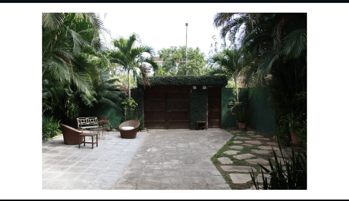
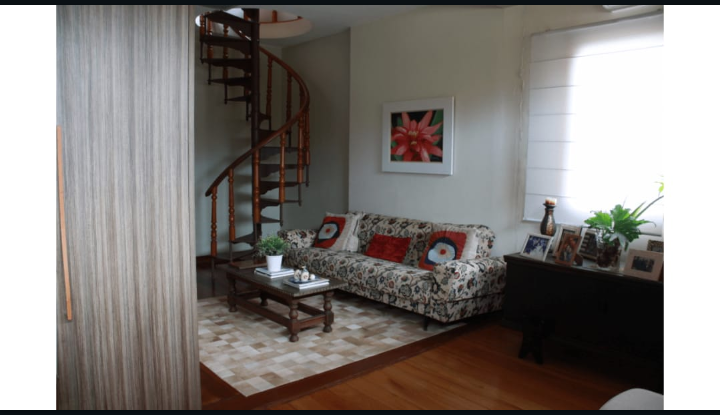
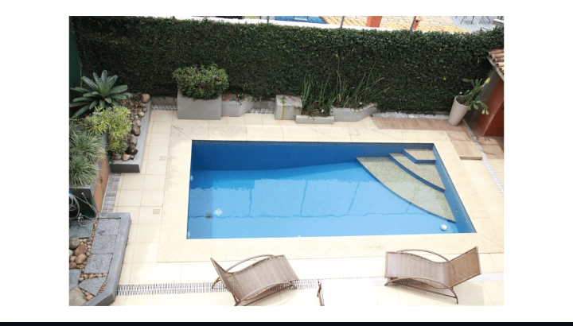
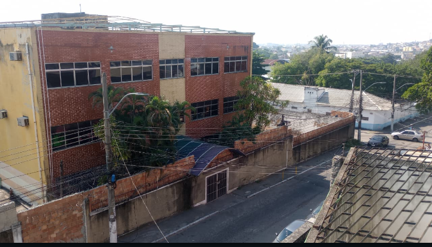
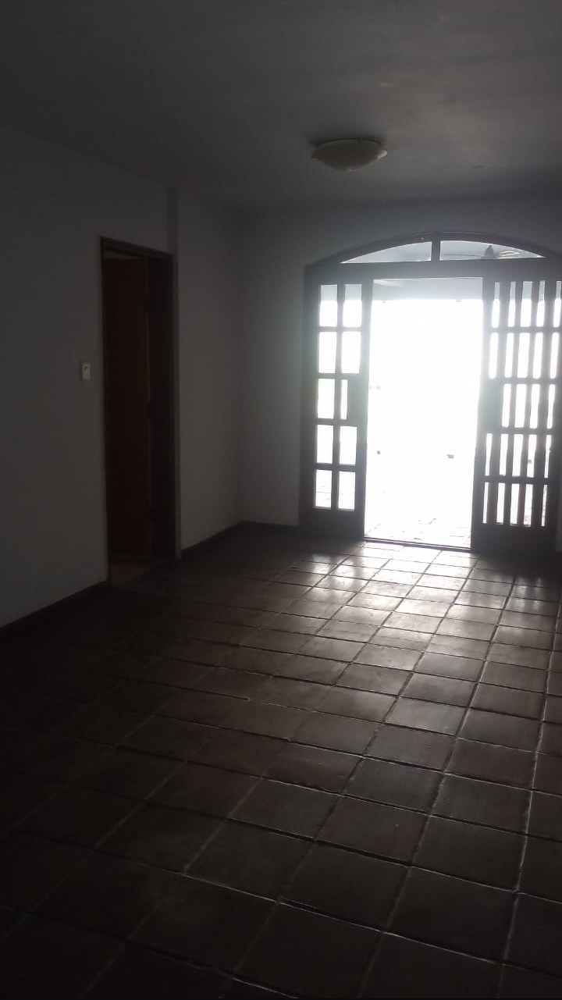
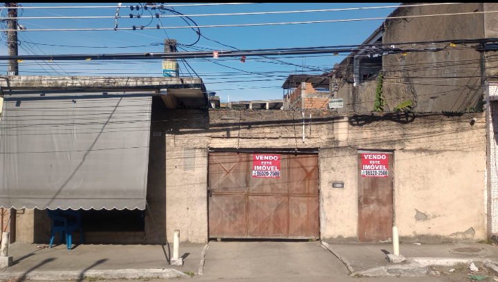
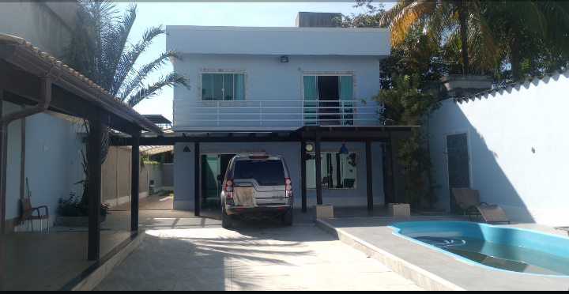
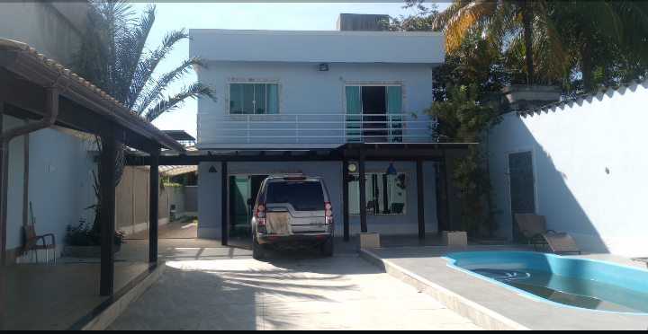

Avulsos
Imóvel 1
Valor: R$ 300.000,00
Terreno com 360m² (12x30), próximo à estação Jardim Primavera.
Duas casas independentes:
- Casa 1: 3 quartos, sala ampla, cozinha, banheiro, varanda
- Casa 2: 2 quartos, sala, cozinha, banheiro, varanda
Quintal amplo nos fundos com poço artesiano. Ideal para lazer, horta ou novas construções.
Ótima opção para morar, investir ou gerar renda com aluguel.
Imóvel 2
Valor: R$ 370.000,00
Localização privilegiada em frente à Unigranrio. Composto por 2 kitnets + 1 casa com suíte. Ideal para estudantes ou investidores.
Imóvel 3
Valor: R$ 380.000,00
Casa com 2 quartos, quintal, garagem. Bairro tranquilo e com infraestrutura completa.
Imóvel 4
Valor: R$ 650.000,00
Apartamento com 3 quartos, suíte, vaga de garagem e varanda gourmet. Próximo ao centro.
Imóvel 5
Valor: R$ 500.000,00
Sobrado com 4 quartos, escritório, garagem para 3 carros, área gourmet e churrasqueira.
Imóvel 6
Valor: R$ 765.000,00
Casa térrea com 3 quartos, cozinha planejada, lavanderia coberta, próximo a escolas e comércio.
Imóvel 7
Valor: R$ 530.000,00
Apartamento no Condomínio Amazonas – Duque de Caxias/RJ
Localizado no 4º andar, com sol da manhã, bem iluminado e arejado
2 quartos (sendo 1 suíte com ar-condicionado e armários planejados)
Sala ampla com cerâmica tipo tijolinho, teto rebaixado em gesso e piso em porcelanato
Varanda charmosa, ideal para momentos relaxantes
Cozinha espaçosa e ventilada, com área de serviço integrada
Banheiro social confortável e funcional
1 vaga de garagem
Imóvel 8
Valor: R$ 720.000,00
Três casas independentes no mesmo terreno à venda na Rua das Acácias – Jardim Primavera
Casa 1 – Térrea e Funcional,2 quartos, sala arejada, cozinha prática, banheiro social e varanda
Valor individual: R$ 250.000,00
Casa 2 – Aconchego e Simplicidade,1 quarto, sala, cozinha, banheiro e varanda
Valor individual: R$ 170.000,00
Casa 3 – Sofisticação no Segundo Andar,Suíte master com banheiro espaçoso, banheira de hidromassagem e espaço para closet
Valor individual: R$ 300.000,00
Imóvel 9
Valor: R$ 950.000,00
Jardim Primavera Santa Cruz da Serra - Rua Leopoldo Miguez
Com um projeto pensado nos mínimos detalhes, ela oferece:
4 quartos confortáveis, sendo 1 suíte com sacada e uma vista inspiradora da área de lazer
Sala impressionante com 86m², perfeita para momentos inesquecíveis com a família
Cozinha ampla, com armários planejados, forno elétrico e despensa para quem ama cozinhar! o espaço ideal
Lavabo elegante, banheiro social no segundo pavimento e mais uma despensa
E quando você pisa na área externa... é amor à primeira vista:
Mas informações pelo whatsapp
Imóvel 10
Valor: R$ 800.000,00
Linda casa de 2 qts na Vila Itamarati - Duque de Caxias
Casa linda com loja na frente - conforto, renda extra e ótima localização em Caxias!
Você está procurando mais do que uma casa?
Que tal um lar completo, com espaço, lazer.
E ainda a oportunidade de montar seu próprio negócio ou garantir uma renda extra?
Esse imóvel tem tudo isso e muito mais!
Confira os detalhes que encantam:
2 quartos aconchegantes, prontos para acolher sua familia
Sala ampla com porta em blindex, perfeita para momentos especiais
Cozinha moderna com pia em granito e revestimento até o teto .
Imóvel 11



Valor: R$ 950.000,00
Rua Lomas Valentinas, 60 -Jardim Vinte e Cinco de Agosto.
Totalmente plana, sem escadas ou desníveis, ela foi pensada para oferecer liberdade e praticidade.
São 3 quartos generosos, iluminados,uma sala majestosa, com impressionantes 28 metros quadrados.
A área de serviço é ampla e arejada, e o quintal convida a momentos de descontração, sol e liberdade. Na frente, um jardim encantador com vasos decorativos traz aquele toque de carinho e beleza que fazem toda a diferença.
Ele está situado em um bairro reservado, seguro e totalmente familiar, onde o sossego reina.
E vigiada 24 horas por segurança privada, com portões de acesso controlado e guarita na entrada.
Agente sua visita .
Imóvel 12


Valor:R$ 2.890.000,00
Encante-se com essa jóia rara no condomínio Santa Mônica Residências - Barra da Tijuca-Rua Pedro Ludovico, 195
Na área externa frontal, o charme do jardim com fonte decorativa se une à funcionalidade da cisterna com 15 mil litros.
Nos fundos, o lazer é completo: piscina, churrasqueira com bancada de apoio, sauna a vapor com chuveiro, além de banheiro e chuveiro externo para maior praticidade.
No segundo pavimento, a casa oferece duas suítes confortáveis, sendo uma suíte master com closets espaçosos, um banheiro de corredor e um mezanino encantador, usado como sala íntima ou escritório.
O terceiro pavimento reserva ainda mais privacidade, com dois quartos (um com closet), banheiro completo e uma sala íntima acolhedora, ideal para relaxar, meditar ou montar um espaço de leitura.
Imóvel 13
Valor: R$ 10.000.000,00
Imóvel amplo com quadra coberta - ideal para escolas, igrejas, clínicas, hospitais ou e...
Prédio com 3 pavimentos estruturados,Diversas salas amplas, bem ventiladas e iluminadas naturalmente
Muro alto com cerca de segurança e sistema básico instalado.
Inúmeras possibilidades de uso:
Local com infraestrutura urbana consolidada e fácil acesso
Estrutura adaptável para atender normas sanitárias e acessibilidade.
Espaços amplos que favorecem projetos de reforma ou personalização.
A quadra coberta pode ser aproveitada para atividades físicas, encontros ou transformada em estacionamento coberto.
Este é o tipo de imóvel que oferece flexibilidade, segurança e ótimo custo-benefício, seja para investimento ou instalação de uma operação consolidada.
Entre em contato e agende uma visita para conhecer de perto esse imóvel que pode ser a base do seu próximo grande projeto!
Imóvel 14



Valor: R$ 2.500.000,00
Galpão Comercial à Venda em Duque de Caxias - Esquina Estratégica com Grande Potencial!
Localizado na movimentada Rua Manuel Telles, em Duque de Caxias
Este galpão é como uma tela em branco esperando um novo projeto para acontecer.
Com visão e criatividade, pode se transformar em um ponto de referência na cidade.
Agende uma visita.
Imóvel 15
Valor: R$ 750.000,00
Lindo imóvel de 5 qts na Rua João Teles - Parque Centenário..
Mansão histórica e imponente em Duque de Caxias - Antiga residência do ex-prefeito Juberlan de Oliveira
Apresentamos uma oportunidade única de adquirir uma mansão de alto padrão, com valor histórico.
Localizada em uma das regiões mais tradicionais de Duque de Caxias.
Este imóvel foi a residência do ex-prefeito Juberlan de Oliveira, que governou o município entre 1986 e 1988.
Marcando um período importante na história política local.
Com projeto arquitetônico diferenciado e ambientes amplos, a propriedade oferece conforto.
Imóvel 16
Valor: R$ 1.000.000,00
Duque de Caxias - Jardim Vinte e Cinco de Agosto
Excelente localização, rua tranquila, próximo a tudo!
Imóvel tem 3 quartos, sendo 1 suíte com banheira e closet.
1 banheiro social com banheira, cozinha ampla com armários.
Sala ampla, vaga, área gourmet, e banheiro no terraço coberto.
Nos fundos dependência de empregada completa. Imóvel precisando de uma guaribada!
Imóvel 17



Valor: R$ 1.000.000,00
Duque de Caxias - Jardim Vinte e Cinco de Agosto - Rua General Mitre, 74
Terreno medindo 12 X 30 com um imóvel de três quartos sendo uma suíte, sala, cozinha, banheiro social.
Todos os cômodos são amplos e arejados, varanda, quintal, vaga para quatro carros, terraço coberto.
Nos fundos tem mais dois cômodos que podem ser transformados em dependência de empregada.
ATENÇÃO: O imóvel precisa de reforma!
IPTU 1500,00.
Imóvel 18
Valor: R$ 900.000,00
Terreno à venda na Vila Itamarati
Excelente localização para galpão ou empresa
Oportunidade imperdível em Duque de Caxias!
Terreno plano com 500m² (10x50m), localizado na Rua Itamaracá.
Vila Itamaraty uma região estratégica, com ótimo fluxo de veículos e fácil acesso.
Terreno amplo, ideal para construção de galpões, depósitos, igrejas, ou sede de empresa
Dois imóveis construídos no local, cada um com 2 quartos, sala, cozinha e banheiro .
Estruturas confortáveis e bem distribuídas
Próximo ao centro de Caxias, Vila São Luís.
Imóvel 19
Valor: R$ 900.000,00
Duque de Caxias - Jd Vinte e Cinco de Agosto
Imóvel bem localizado, próximo de tudo, bairro nobre, rua tranquila e arborizada.
Imóvel com 2 quartos sendo 1 suíte com closet.
Dependência de empregada completa no terraço,
Sala ampla, cozinha ampla com armários planejados e coifa.
Banheiro social com blindex, 3 vagas de garagem, terraço coberto com área gourmet.
Piscina, energia fotovoltaica, sala, suíte e cozinha desenvolvidos por arquitetos.
Incluso todos os embutidos,Documentação cristalina.
Mas informações pelo whatsapp
Imóvel 20
Valor: R$ 200.000,00
Marechal Deodoro. Duque de Caxias.
Flat 1 quarto, varanda, vaga e portaria 24hs.
Condomínio com clube,sauna, piscina, elevadores.
Condomínio: R$ 800,00
IPTU: R$ 1.100,00 por ano.
Próximo a INSS, Caixa, faculdades e estação.
Mas informações pelo whatsapp
Imóvel 21
Valor: R$ 480.000,00
Rua Barbosa Rodrigues,Duque de Caxias.
Imóvel espaçoso e sofisticado, ideal para quem busca conforto e tranquilidade.
Ambientes amplos e bem iluminados, com piso laminado e acabamento de qualidade.
Cozinha planejada, área de serviço funcional e escadas em granito.
Quartos amplos, incluindo um suíte no andar térreo; outros quartos no segundo andar com varanda e vista panorâmica
Acabamento moderno com armários planejados, janelas de blindex e ar-condicionado.
Situado em rua tranquila, com duas casas no terreno, oferecendo exclusividade e segurança.
Mas informações pelo whatsapp
Imóvel 22
Valor: R$ 250.000,00
Rua Doutor Manoel Telles .
Apartamento de 2 quartos no Condomínio Vitória
Com piso laminado e acabamento de qualidade,com sala, cozinha, banheiro com blindex, área de serviço e varanda.
Piso porcelanato, teto rebaixado em gesso e iluminação em LED.
Condomínio com portaria 24h, lazer completo e áreas comuns revitalizadas.
Mas informações pelo whatsapp
Entre em Contato
üí¨


 
